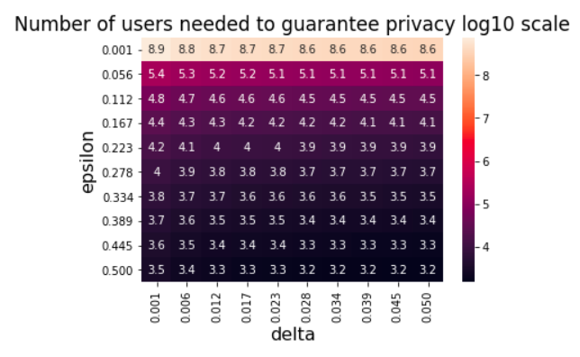
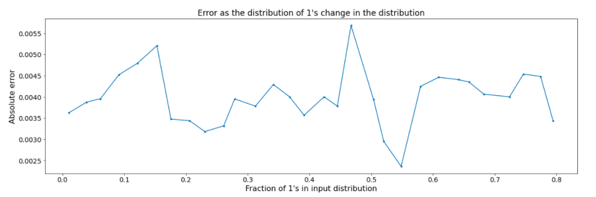
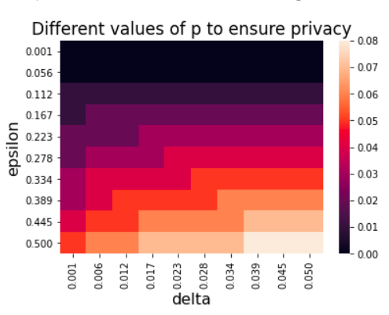

Draft (first update): Novmber 2nd, 2021, 10:04 BST
Draft (last update): Novmber 18th, 2021. 14:24 BST
Each member of the dataset \(x \in D\) holds a value in \(\{0, 1\}\). We simply want to estimate \(f(X) = \sum_{i=1}^n x_i\). Let \(\hat{f}(X)\) be the estimated sum by the algorithms. Understanding binary sum gives us all the key insights we need to anslyse integer sums. In this writeup we consider the view of the anlyser for the three regimes in consideration. NOTE: this is purely for the sake of analysis. In practice they are usually implemented in a federated setting or local/shuffle privacy setting. The noise addition, thresholding and sampling might be done at the user level. We perform all the computations at the analyser level as it simplifies the analysis.
Even though there are other algorithms quoted in the literature. We will show later in this document that analysing just two algorithms is sufficient to understand when to use which algorithm.
Say company “A” needs an estimate of a binary sum – and they need to do it privately. They do not understand statistics. All they have is a privacy budget described by \((\epsilon, \delta)\). Given this budget, they want the most accurate estimate possible. As consultants for this company how should we proceed.
Given an \((\epsilon, \delta)\), this regime needs the number of users \(n\) to be at least \(\frac{100}{\epsilon^2}\log(2/\delta)\) or more. Setting \(n=\frac{100}{\epsilon^2}\log(2/\delta)\), gives us \(p=1/2\) which is adds the most noise to the algorithm (variance of binomial maximal at p=1/2)
We look at practical values of \((\epsilon, \delta)\) and observe how many users are truly needed to guarantee differential privacy.

Observe, even with epsilon as high as 0.5, to avoid bad events 95% of the time, we need at least 1000 users to get privacy. This also means that \(Z \sim Binomial(n,p)\) is approximately equal to \(np\) as we are under the large \(n\) regime. We expect error to be very small (from the tail bounds of a binomial within \(\frac{1}{\sqrt{n}}\)). A second thing to note is that the error of this regime is given by \(|np - Z|\) where \(Z \sim Binomial(n,p)\). The number of 1’s in a users data k, does not show up in the formula for error at all. We empirically validate this in the plot below. There should be no correlation between error and fraction of 1’s in users data.

Since the error of this regime is not effected by \(k=\sum_{i=1}^n x_i\), an effective application of this algorithm is when we are in the large data setting: n is large, and the number of users with 1’s is sparse.
Given an \((\epsilon, \delta)\), this algorithm imposes some restrictions on \(m\) and \(\tau\). To ensure privacy, it requires \(\tau \geq 3 + \log(1/\delta)\) and \(m \leq \frac{\epsilon n}{\tau}\). The random coin has parameter \(p=\frac{m}{n}\). Intuitively, the bigger the value of m, the worse the privacy but better the accuracy. Given a \((\epsilon, \delta)\), the optimal thing in terms of accuracy would be to set \(m\) equal to \(\frac{\epsilon n}{\tau}\) where \(\tau=3 + \log(1/\delta)\), which is the smallest possile value for the parameter. The figure below looks at the distribution of the parameter value \(p\) as we look at practical values of \((\epsilon, \delta)\)

If we require extreme privacy, really small \(\epsilon\) we will need to sample less than \(1\%\) of the data and apply thresholding. Furthermore, we never sample more than \(8\%\) of the data. Note,the parameter \(p\) is independent of \(n\). See below:
\[\begin{align*} p &= \frac{m}{n} \\ &= \frac{\epsilon}{\tau} \tag{1} \label{1}\\ \end{align*}\]
\(\ref{1}:\) since \(m=\frac{\epsilon n}{\tau}\)
The above analysis provides intuition about where we expect this algorithm to shine! Non sparse regimes in the non large data regime. If the data set is very sparse where \(k \leq tau\), we have no hope to begin with. NOTE: The additive noise mechanisms have no issue in this regime, provided \(n\) is big enough. On the contrary, in this world, no matter how small \(n\) is, as long as \(k\) is big enough we need not worry about getting bad estimates under even small values of \(n\).
The natural question is how sparse is too sparse. With the other algorithm there is deterministic formula for \(n\) which tells us that with probability 1 - \(\delta\) we get privacy
Here we show empirically that our analysis above is true. We design datasets that suit each algorithm.
In this section we re-derive the main parts of both proofs and establish the connection between the two regimes. Both regimes guarantee pure privacy under a good event. Both regimes claim that privacy is preserved with probaility \(1 - \delta\) – where \(\delta\) (the likelihood of bad events) shrinks very quickly as \(n\) grows. When we write “shuffle privacy needs” or “sample privacy needs”, what we mean is the presented analysis in the paper needs – not the algorithm itself. As shown above both algorithms are equivalent. To guarantee privacy, shuffle privacy needs event \(E_1\) and sample-threshold needs event \(E_2\). Let these events occur with probability at least \(1 - \delta_1\) and \(1 - \delta_2\). In this analysis we will derive shuffle privacy and then morph the sample privacy proof to show equivalence.
The version of chernoff bound for bernoulli’s both papers utilise is the following:
Let \(\delta \geq 0\) and \(\mu=pn\),
\[\mathbb{P}[\sum_{i=1}^n X_i \geq (1 + \delta)\mu] \leq \Big( \frac{e^{\delta}}{(1 + \delta)^{(1 + \delta)}}\Big)^{\mu} \leq e^{-\frac{\delta^2\mu}{2 + \delta}}\]
First we try and understand what the good event \(E_1\) actually is. The lemma’s used in this section can be found in Appendix C, 4.11 and 4.12 of [2] or alternatively my re-derivations of the same.
The proofs for Shuffle privacy works out because the binomial distribution \((\epsilon, \delta, k)\)-smooth and adding noise from a smooth distribution to the output of binary sums (which is a 1-incremental function) gives pure \(\epsilon\) privacy with probality \(1 - \delta\). In general if the function being evaluated has sensitivity \(\Delta\), then we get \((\epsilon\Delta, \delta\Delta)\) privacy but in our case \(\Delta=1\).
[2] define := distribution \(\mathbb{D}\) is smooth over \(\mathbb{Z}\) is \((\epsilon, \delta, k)\) smooth, if \(\forall k' \in [-k, k]\) if the event E
\[\mathbb{P}_{Y \sim \mathbb{D}}\Big[E \geq e^{|k'|\epsilon}\Big] \leq \delta\] or
\[\mathbb{P}_{Y \sim \mathbb{D}}\Big[E < e^{|k'|\epsilon}\Big] > 1 - \delta\]
where \[E=\frac{\mathbb{P}_{Y' \sim D}\Big[Y'=Y\Big]}{\mathbb{P}_{Y' \sim D}\Big[Y'=Y+k'\Big]}\]
To show that binomial is smooth we need event \(I(E \leq e^{|k'|\epsilon})\) happens with probability at least \(1 - \delta\). In the proofs Ghazi et al show that if event \(E_1\) happens, then event \(I(E > e^{|k'|\epsilon})\) happening is impossible i.e. \(E_1 => I(E \leq e^{|k'|\epsilon})\).
Thus if event \(E_1\) happens with probality at least 1 - \(\delta\), then so will event \(I(E \leq e^{|k'|\epsilon})\). The event \(E_1\) is defined as the sum of \(n\) \(Bernoulli(p_1)\) random variables be within a multiplicative factor of the mean of their expected sum. They can as the set of bernoulli random variables such that \(Z = (z_1, \dots, z_n)\)
\[E_1 := \{ Z | \sum_{i=1}^n z_i \in [(1 - \alpha)np_1 + k, (1 + \alpha)np_1 - k] \}\] where \(\alpha \in (0,1)\) and \(k=1\) and \(z_i \sim Bernoulli(p_1)\)
The likelihood of this event \(E_1\) can be bounded by the multiplicative chernoff bound. So the \(\delta\) in shuffle privacy paper is pulled from the mulipilicative chernoff bound by setting the error region to
\[\tilde{E_1} := \{ Z | \sum_{i=1}^n z_i \in [(1 - \alpha/2)np_1 , (1 + \alpha/2)np_1 ]\}\]
By the two sides of the multiplicative chernoff bound we get
For \(\alpha < 1\), we have \(\mathbb{P}[Z \notin \tilde{E_1}] \leq exp(-\frac{\alpha^2p_1 n}{8}) + exp(-\frac{\alpha^2p_1 n}{8+2\alpha}) < exp(-\frac{\alpha^2p_1 n}{10}) + exp(-\frac{\alpha^2p_1 n}{10})\)
Setting \(\delta =2exp(-\frac{\alpha^2p_1 n}{10})\), and solving for \(p\) we get what we need.
Since \(\tilde{E_1} \subseteq E_1\), if an event in \(\tilde{E_1}\) happens with probability \(1 - \delta\) then so will an event in \(E_1\).
The connection between the multiplicative factor \(\alpha\) and the privacy parameter \(\epsilon\) is \(\alpha = \frac{e^{\epsilon} - 1}{e^{\epsilon} + 1}\). Note: a constant greater than equal to \(\alpha\) will only make the good event region bigger, so bounds that hold for \(\alpha = \frac{e^{\epsilon} - 1}{e^{\epsilon} + 1}\) will also hold. This is how Balcer and Cheu get their bounds, in their shuffle privacy paper, Balcer and cheu show that setting \(\alpha = [\frac{\epsilon}{\sqrt{5}}, 1)\), is sufficient for the binomial distribution to be \((\epsilon, \delta, 1)\) smooth. This is only true because \(\frac{\epsilon}{\sqrt{5}} \geq \frac{e^{\epsilon} - 1}{e^{\epsilon} + 1})\) for all \(\epsilon \in [0,1]\)
and since binary sums are 1-incremental and have sensitivity \(\Delta=1\), we get \((\epsilon, \delta)\) privacy for \(\alpha = [\frac{\epsilon}{\sqrt{5}}, 1)\).
Now we look at the event \(E_2\) that is needed for privacy to hold. From Grahams AI stats submission, lemma 1 defines \(E_2\). Lemma 1 states: the probability that the number of samples of an item is more than \(\tau\) times its expectation is at most \(\delta\), for \(\tau = 3 + \log(1/\delta)\). In the world of just binary numbers, these requirements can be restated as the following:
Given the number of 1’s in the population is k. i.e. \(\sum_{i=1}^n x_i = k\). Each person \(x_i\) has a \(p_2\) chance of being sampled. Thus the expected number of 1’s in the sampled dataset is \(E[\sum_{i=1}^n z_ix_i] = kp_2=\frac{km}{n}\)
An element in the set of good events \(E_2\) is defined as the sum of sampled population being less than \(\tau\) times the expected value of the sum of the sampled population. Let \(\alpha = \frac{k}{n}\) the fraction of users that have 1 in the dataset. Clearly, \(\alpha \in [0,1]\)
\[E_2: = \sum_{i=1}^n z_ix_i \leq \tau kp_2\] Now we connect this event to the event \(E_1\) in shuffle privacy.
\[\begin{align*} \sum_{i=1}^n z_ix_i &\leq \tau kp_2 \\ n - \sum_{i=1}^n \bar{z_ix_i} &\leq \tau kp_2 \\ n - (2n - \sum_{i=1}^n x_i - \sum_{i=1}^n z_i) &\leq \tau kp_2 \\ \sum_{i=1}^n z_i &\leq \tau kp_2 + (n - \sum_{i=1}^n x_i) \\ \sum_{i=1}^n z_i &\leq \tau kp_2 + (n - k) \\ \sum_{i=1}^n z_i &\leq \tau \frac{k}{n} np_2 + (n - k) \\ \sum_{i=1}^n z_i &\leq \tau \alpha np_2 + (n - k) \\ \end{align*}\]
\[E_2 := \{ (z_1, \dots, z_n) | \sum_{i=1}^n z_i \in [0, \tau\alpha np_1 +(n -k)] \}\]
Already \(E_2\) looks the one sided version of \(E_1\), with the constants slightly different. Let’s see if we can maniuplate them further.